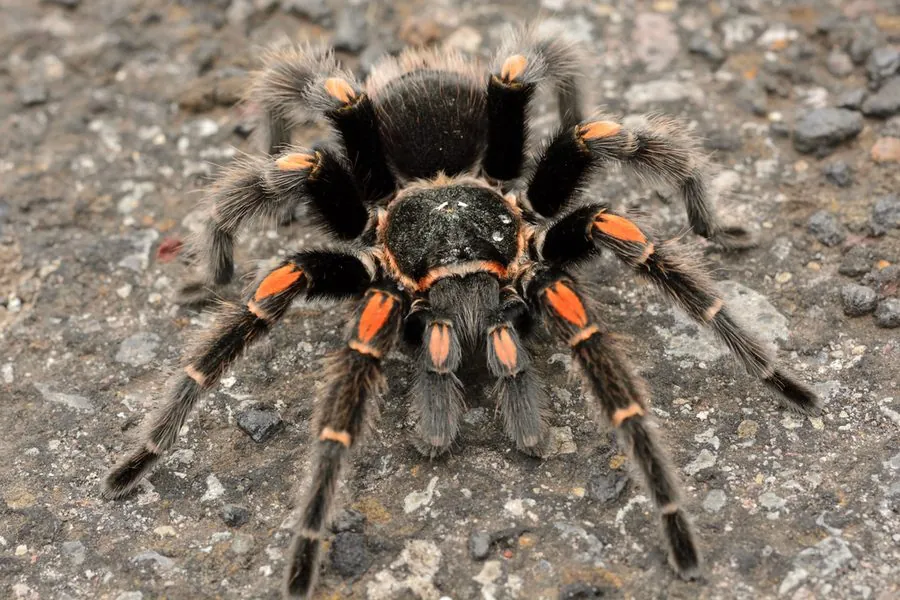

蛛形动物 · 动物界
墨西哥金背捕鸟蛛 Brachypelma auratum

原产墨西哥的捕鸟蛛，足部有橙红色环带，性情温顺，寿命长，因外形华丽而成为异宠贸易中的热门物种。
- 分类
- 门节肢动物门纲蛛形纲目蜘蛛目科捕鸟蛛科属短尾捕鸟蛛属
- 栖息环境
- 干旱灌丛、落叶林和山坡石缝，常在地面挖洞或利用缝隙
- 地理分布
- 墨西哥南部的太平洋沿岸地区
- 保护级别
- IUCN 暂无评估；列入《濒危野生动植物种国际贸易公约》附录二
物种志
墨西哥金背捕鸟蛛成年足展 12–14 cm，体色深褐至黑色，步足各节有橙红色环带，腹部覆盖红褐色长毛，外形醒目；雌蛛体型粗壮，雄蛛较瘦小，触肢末端有交配器。
它原产于墨西哥南部的太平洋沿岸，栖息于干旱灌丛、落叶林和山坡石缝，常在地面挖洞或利用天然缝隙筑巢，夜间捕食昆虫、小型蜥蜴和蛙类。墨西哥金背捕鸟蛛性情温顺、行动缓慢，受惊时主要靠弹射蛰毛防御，蛰毛接触皮肤和眼睛会引起瘙痒红肿。雌蛛寿命可达 20 年以上，繁殖期产卵数十至上百枚，它生长缓慢，成熟需要数年。由于外形华丽，它长期被捕捉用于异宠贸易，野外种群受到关注，已被列入《濒危野生动植物种国际贸易公约》附录二；目前 IUCN 暂无评估。
形态与习性
- 食性昆虫、小型蜥蜴和蛙类
- 足展12–14 cm
- 识别步足有橙红色环带，腹部覆红褐色长毛
- 寿命雌蛛可达 20 年以上
- 繁殖每窝产卵数十至上百枚，生长缓慢
- 保护列入《濒危野生动植物种国际贸易公约》附录二
趣味知识
- 墨西哥金背捕鸟蛛的步足上有一圈圈橙红色环带，像戴了手镯。
- 它性情温顺、行动缓慢，是捕鸟蛛里出了名的“慢性子”。
- 由于异宠贸易捕捉，它被列入《濒危野生动植物种国际贸易公约》附录二。